Multivariate
Multivariate.Rmd
library(qacOutliers)
#> Warning: replacing previous import 'dplyr::combine' by 'gridExtra::combine'
#> when loading 'qacOutliers'
#> Warning: replacing previous import 'dplyr::lag' by 'stats::lag' when loading
#> 'qacOutliers'
#> Warning: replacing previous import 'dplyr::filter' by 'stats::filter' when
#> loading 'qacOutliers'
#> Warning: replacing previous import 'dbscan::as.dendrogram' by
#> 'stats::as.dendrogram' when loading 'qacOutliers'What are multivariate outliers? How do you detect them?
A multivariate outlier is an outlier that can only be detected by
looking at two variables in combination. The graph below shows examples
of multivariate outliers. The data for this graph is taken from the
Salaries dataset from the carData package.

All of the red dots are multivariate outliers. The point labelled 1
on the graph is a clear example of a multivariate outlier. This person
has had 22 years since their PhD, a normal value for that variable, and
makes $62,884 dollars, which is also a normal value for
salary. However, when combining these two features, a person who has had
22 years since their PhD and makes only $62,884 is making
much less than other professors within their experience range.
The outliers in this graph were detected using the LoF method, and more detail about that method can be provided below. This package specifically focuses on four different methods for finding multivariate outliers: kNN, LoF, mahalanobis distance, and iForest.
kNN
kNN calculates the distances between a data point and its k-nearest neighbors and assigns an outlier score based on that distance. The principle that guides kNN is that outliers lay far away from their neighbours, so each of the distances is interpreted within that context. Because some variables in the data may have much larger ranges that others (ex. a variable has a range from 1-10 and another has a range of -10000 to 10000), the data is standardized before calculating the distances.
Here is an example of the distances for the first 5 rows in
mtcarsOutliers, a dataset included with this package.
#> [,1] [,2] [,3] [,4] [,5]
#> [1,] 1.5229770 2.102410 2.265502 2.651939 2.664224
#> [2,] 1.5031299 1.509144 1.522977 1.568453 1.608401
#> [3,] 1.2561178 1.503130 1.728826 1.817606 1.983652
#> [4,] 0.3490918 1.045627 1.163944 1.331333 1.351668
#> [5,] 4.7397611 5.019562 5.024754 5.026238 5.106755After each of these distances are calculated, the average for each row is calculated. Here are the average scores for the 5 rows shown above. This step is why it’s important to standardize the data before finding the distances.
#> [1] 2.241410 1.542421 1.657866 1.048333 4.983414In this function, the next step involves creating a threshold for declaring a point an outlier. To calculate this threshold, the function takes the average of each row (after that row’s average has been calculated), and adds 2 times the standard deviation of each row to that number. In this case, the threshold is the number below.
#> [1] 5.657686Outliers are considered any points with a score above the calculated threshold. In this case, the outliers are shown below.
#>
#> Method: kNN
#> Dataset: mtcarsOutliers
#> Variables: mpg cyl disp hp drat wt qsec vs am gear carb
#> Row: 11 19
#> Outlier Score: 547.8248 393.1049
#> Message: Outliers detected
#> Option 1 : k = 5Customizing the k parameter
The value k tells the function how many points to
consider as neighbors when identifying distances between each of the
points. The default value, 5, finds the distance between each point the
5 points that are closest to that point. The choice of k
significantly impacts the results, and smaller values are generally more
sensitive to outliers. You can supply your own value of k,
which may change the results of the function.
multiOutliers(mtcarsOutliers, method = "kNN", k = 10)
#>
#> Method: kNN
#> Dataset: mtcarsOutliers
#> Variables: mpg cyl disp hp drat wt qsec vs am gear carb
#> Row: 11 19
#> Outlier Score: 568.7642 441.0597
#> Message: Outliers detected
#> Option 1 : k = 10Example Output
When using the kNN method with the default k=5, the
function returns:
- Method: “kNN”, indicating the method used.
- Data: The dataset name.
- Variables: The numeric columns considered for outlier detection.
- Row: Indices of rows identified as outliers.
- Score: Average kNN distance scores of detected outliers.
- Message: A summary message indicating whether outliers were detected.
- k: The number of nearest neighbors considered.
#>
#> Method: kNN
#> Dataset: mtcarsOutliers
#> Variables: mpg cyl disp hp drat wt qsec vs am gear carb
#> Row: 11 19
#> Outlier Score: 547.8248 393.1049
#> Message: Outliers detected
#> Option 1 : k = 5Notes and Considerations
Numeric Data Only: The kNN method requires numeric variables. Non-numeric columns are automatically excluded.
Robustness: kNN does not assume a specific distribution of data, so it is robust to non-normality, making it a better tool to handle non-normal data than other outlier detection methods.
To learn more about kNN and how it’s used in multivariate outlier detection, visit these resources: - GeeksforGeeks.com - Dualitytech.com - StatQuest
Local outlier factor (LoF)
LoF for a point is the average density around the k-nearest neighbors of the point divided by the density around the point itself. If the LoF score is above 1, it ts more likely to be anomalous, if it is below 1, it is less likely to be anomalous.
-describe how this works within our function
multiOutliers(mtcarsOutliers, method="LoF")
#>
#> Method: LoF
#> Dataset: mtcarsOutliers
#> Variables: mpg cyl disp hp drat wt qsec vs am gear carb
#> Row: 5 7 9 10 11 12 20 31 32
#> Outlier Score: 2.28365 2.719583 2.560179 1.530304 1.563598 1.804971 1.567824 2.950466 1.574599
#> Message: Outliers detected
#> Option 1 : minPts = 10-how to customize results (change threshold and stuff) -how to intrepret results
Mahalanobis
The Mahalanobis distance measures the distance of a point from the center of a multivariate distribution while accounting for the correlation between variables. This method identifies outliers by calculating how far each point is from the data’s multivariate mean, considering the covariance matrix of the data. This approach is particularly useful when variables are highly correlated or have different scales.
Before using the Mahalanobis distance, the function automatically
selects numeric columns from the dataset. Non-numeric variables are
excluded, ensuring compatibility with the method. The distances are then
calculated using the outliers_mahalanobis function from the
Routliers package.
Here is an example of calculating Mahalanobis distances for the
mtcarsOutliers dataset included with this package:
#> Mazda RX4 Mazda RX4 Wag Datsun 710 Hornet 4 Drive
#> 7.217210 3.682371 5.829785 1.981340
#> Hornet Sportabout
#> 25.022031The outliers are identified by the function and their indices are returned:
#> Hornet Sportabout Duster 360 Merc 230 Merc 280
#> 5 7 9 10
#> Toyota Corolla Maserati Bora Volvo 142E
#> 20 31 32Outliers are identified by comparing the Mahalanobis distance of each
point to a threshold derived from the chi-squared distribution. Points
with distances greater than the critical value at a specified
significance level (alpha) are flagged as outliers. The
default alpha is 0.05, which corresponds to a 95%
confidence level. You can customize this value to adjust the sensitivity
of the detection.
Here is the threshold for the dataset using the default
alpha = 0.05:
#> [1] 18.30704The outliers identified are shown below:
multiOutliers(mtcarsOutliers, method = "mahalanobis")
#>
#> Method: mahalanobis
#> Dataset: mtcarsOutliers
#> Variables: mpg cyl disp hp drat wt qsec vs am gear carb
#> Row: 5 7 9 10 12 20 31 32
#> Outlier Score: 25.11784 29.58581 27.30969 19.22256 26.99406 21.46034 27.95683 25.39721
#> Message: Outliers detected
#> Option 1 : alpha = 0.1Customizing the alpha parameter
The alpha parameter in outliers_mahalanobis determines
the significance level for outlier detection. Lower values (e.g.,
alpha = 0.01) result in stricter thresholds, identifying
fewer points as outliers. You can modify alpha as
follows:
multiOutliers(mtcarsOutliers, method = "mahalanobis", alpha = 0.01)
#>
#> Method: mahalanobis
#> Dataset: mtcarsOutliers
#> Variables: mpg cyl disp hp drat wt qsec vs am gear carb
#> Row: 5 7 9 12 31 32
#> Outlier Score: 25.11784 29.58581 27.30969 26.99406 27.95683 25.39721
#> Message: Outliers detected
#> Option 1 : alpha = 0.01Example Output
When using the Mahalanobis method with the default
alpha = 0.05, the function returns:
- Method: “mahalanobis”, indicating the method used.
- Data: The dataset name.
- Variables: The numeric columns considered.
- Row: Indices of rows identified as outliers.
- Score: Mahalanobis distance scores of detected outliers.
- Message: A summary message indicating whether outliers were detected.
- Alpha: The significance level used.
#>
#> Method: mahalanobis
#> Dataset: mtcarsOutliers
#> Variables: mpg cyl disp hp drat wt qsec vs am gear carb
#> Row: 5 7 9 12 20 31 32
#> Outlier Score: 25.11784 29.58581 27.30969 26.99406 21.46034 27.95683 25.39721
#> Message: Outliers detected
#> Option 1 : alpha = 0.05Notes and Considerations
Numeric Data Only: The Mahalanobis method requires numeric variables. Non-numeric columns are automatically excluded.
Multivariate Normality: This method assumes the data follows a multivariate normal distribution. Deviations from normality or the presence of extreme outliers may affect the results.
To learn more about Mahalanobis distance and how it’s used in multivariate outlier detection, visit these resources: * Statisticshowto.com * Builtin.com
iForest
iForest stands for isolation forest. First, it randomly selects a variable, then randomly selects a value of that variable. This will work for both quantitaive and categorical; if the variable is quantitative, it will randomly pick a number in the range of the variable, and if the variable is categorical it will randomly pick a level. Then it will split the data using the value randomly selected eariler.
The iForest method repeats the above steps until all points are separately in their own node. Then, for each data point, it counts how many splits were needed to isolate it.
Because the selection of variables and values is random, this process will return different results each time. Therefore, isolation trees are repeated many times and the results are averaged over all trials. More isolated points will have lower average path lengths. They are more isolated from the rest of the data’s distribution, therefore they are called outliers.
multiOutliers(mtcarsOutliers, method="iForest")
#>
#> Method: iForest
#> Dataset: mtcarsOutliers
#> Variables: mpg cyl disp hp drat wt qsec vs am gear carb iso_score
#> Row: Merc 230 Maserati Bora Toyota Corolla Hornet Sportabout Volvo 142E
#> Outlier Score: 0.5912855 0.5673572 0.5386362 0.4858491 0.4728747
#> Message: Outliers detected